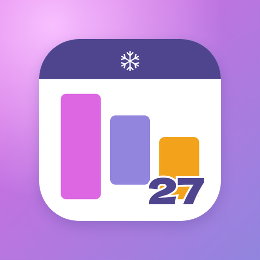

カレンダー・マップ・グッズ・運行情報をまとめたアプリとして作り直した案です。左上が今のアイコン（github.io のまま残す方）。
github.io 側に残す。比べる用（website/image/icon-maskable-512.png）

白い板にカレンダー・マップ・グッズ・運行情報の4色のタイル。真ん中に27。中身が4つあるのがひと目で分かる
Aの真ん中の白丸のふちを、6本の枝の雪の結晶にした案（太めの枝）
A2の枝を細く長くし、枝分かれを2段にした案。結晶らしさは強いが、小さいと線が消えやすい
Aの真ん中の白丸を♡にした案（ほしいものリストの♡とも合う）
A4の♡を大きくし、紫のグラデーション・白いふち・白い27と、内側の♡の線に沿って下の先から右上へ上がる点（公式のボタンの雰囲気）
マップのピンの形に、今のアイコンの3本の帯を入れる。今のアイコンからの続きが分かりやすい
27を主役にして、下に4つの線のアイコンを並べる。文字が大きいので小さくても読める
3つ折りの地図に道とピン。「会場を回るためのアプリ」に寄せた案
今のアイコンの白い板に、左のサイドバー（4つの点）を足す。今の形をいちばん残す案